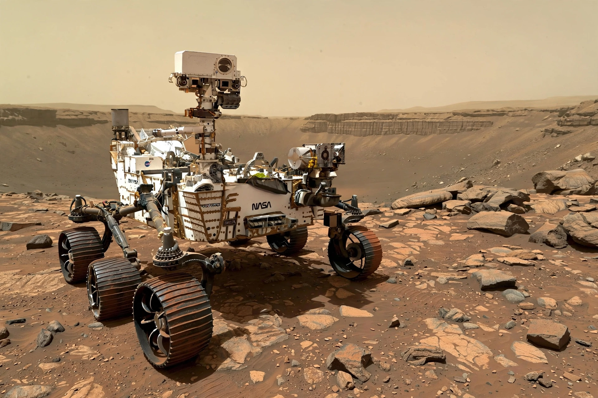

Rovers
NASA's Perseverance rover landed in Jezero Crater in February 2021 with the Ingenuity helicopter, which flew 72 times before its mission ended in 2024. Perseverance is caching samples of rock and soil for a possible future return to Earth. Curiosity, landed in Gale Crater in 2012, continues studying Mars's ancient habitable environments.
An ancient wet world
Orbital imagery and rover chemistry show Mars once had rivers, lakes and perhaps an ocean, under a thicker atmosphere. Today it is cold and dry, its water locked in polar caps and underground ice — the target for future human explorers.
Mars in the news cycle
NASA's Mars pages collect the latest rover images, weather reports from Jezero, and mission updates, including the long-running Mars Report video series, as recalled.